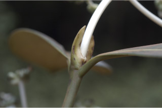
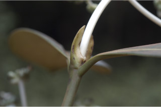

Large shrubs or small trees ca. 5 m tall.
ದೊಡ್ಡ ಗಾತ್ರದ ಪೊದೆಗಳು ಅಥವಾ ಅಂದಾಜು 5 ಮೀ. ಎತ್ತರದವರೆಗಿನ ಸಣ್ಣ ಗಾತ್ರದ ಮರಗಳು.
Large shrubs or small trees ca. 5 m tall.
பெரிய குத்துச்செடி அல்லது சிறிய மரம் 5 மீ. உயரம் வரை வளரக்கூடியது.
Young branchlets subterete to compressed, glabrous.
ಎಳೆಯ ಕಿರುಕೊಂಬೆಗಳು ಉಪ ದುಂಡಾಗಿರುವುದರಿಂದ ಸಂಕುಚಿತದವರೆಗಿನ ಆಕಾರ ಹೊಂದಿರುತ್ತವೆ ಮತ್ತು ರೋಮರಹಿತವಾಗಿರುತ್ತವೆ.
Young branchlets subterete to compressed, glabrous.
சிறியநுனிக்கிளைகள் குறுக்குவெட்டுத் தோற்றத்தில் வளையமானது முதல் தட்டையானது, உரோமங்களற்றது.
Leaves simple, opposite, decussate; stipules intrapetiolar, foliaceous, lanceolate, sheathing, glabrous; petiole 1-2 cm long, planoconvex in cross section, glabrous; lamina 12-25 x 4.5-10.5 cm, obovate or oblanceolate, apex obtuse or rounded and abruptly shortly acuminate, base cuneate to decurrent, margin entire, thickly coriaceous, glabrous; midrib raised above; secondary_nerves 12-20 pairs, parallel; tertiary_nerves obscure or broadly reticulate if visible.
ಎಲೆಗಳು ಸರಳವಾಗಿದ್ದು ಕತ್ತರಿಯಾಕಾರದ ಅಭಿಮುಖ ಜೋಡನಾ ವ್ಯವಸ್ಥೆಯಲ್ಲಿರುತ್ತವೆ, ಕಾವಿನೆಲೆಗಳು ಗಾತ್ರದಲ್ಲಿದ್ದು,ತೊಟ್ಟುಗಳ ನಡುವೆ ಇರುತ್ತವೆ,ಎಲೆಯ ರೂಪವನ್ನು ಹೊಂದಿರುತ್ತವೆ, ಭರ್ಜಿಯಆಕಾರದಲ್ಲಿದ್ದು, ಒರೆಯ ಸಮೇತವಿರುತ್ತವೆ ಹಾಗೂ ರೋಮರಹಿತವಾಗಿರುತ್ತವೆ; ತೊಟ್ಟು 1 – 2 ಸೆಂ.ಮೀ.ವರೆಗಿನ ಉದ್ದವಿದ್ದು, ಅಡ್ಡ ಸೀಳಿದಾಗ ಸಪಾಟ ಪೀನ ಮಧ್ಯದ ಆಕಾರ ಹೊಂದಿದ್ದು, ರೋಮರಹಿತವಾಗಿರುತ್ತವೆ;ಪತ್ರಗಳು 12 .5 -25 X4.5 -10.5 ಸೆಂ.ಮೀ. ಗಾತ್ರ ಹೊಂದಿದ್ದು, ಬುಗುರಿಯ ಅಥವಾ ಭರ್ಜಿ-ಬುಗುರಿಯ ಆಕಾರ ಹೊಂದಿದ್ದು, ಚೂಪಲ್ಲದ ಅಥವಾ ದುಂಡಾದ ಮತ್ತು ಕಿರಿದಾದ ಕ್ರಮೇಣ ಚೂಪಾಗುವವರೆಗಿನ ತುದಿ, ಬೆಣೆಯಾಕಾರದಿಂದ ತಳಭಾಗಕ್ಕೆ ವಿಸ್ತರಿಸಿದ ಬುಡ, ನಯವಾದ ಅಂಚು, ದಪ್ಪನೆಯ ತೊಗಲನ್ನೋಲುವವರೆಗಿನ ಮೇಲ್ಮೈ ಹೊಂದಿರುತ್ತವೆ ಹಾಗೂ ರೋಮರಹಿತವಾಗಿರುತ್ತವೆ; ಮಧ್ಯನಾಳ ಪತ್ರದ ಮೇಲ್ಭಾಗದಲ್ಲಿ ಉಬ್ಬಿರುತ್ತದೆ;ಎರಡನೇ ದರ್ಜೆಯ ನಾಳಗಳು 12 ರಿಂದ 20 ಜೋಡಿಗಳಿದ್ದು ಅಕ್ಷದ ಲಂಬ ಕೋನಕ್ಕೆ ಸಮಾನಾಂತರದಲ್ಲಿರುತ್ತವೆ;ಮೂರನೇ ದರ್ಜೆಯ ನಾಳಗಳು ಅಸ್ಪಷ್ಟ ಅಥವಾ ಸ್ಪಷ್ಟವಾಗಿದ್ದ ಪಕ್ಷದಲ್ಲಿ ವಿಶಾಲ ಜಾಲಬಂಧ ನಾಳ ವಿನ್ಯಾಸದಲ್ಲಿರುತ್ತವೆ.
Leaves simple, opposite, decussate; stipules intrapetiolar, foliaceous, lanceolate, sheathing, glabrous; petiole 1-2 cm long, planoconvex in cross section, glabrous; lamina 12-25 x 4.5-10.5 cm, obovate or oblanceolate, apex obtuse or rounded and abruptly shortly acuminate, base cuneate to decurrent, margin entire, thickly coriaceous, glabrous; midrib raised above; secondary_nerves 12-20 pairs, parallel; tertiary_nerves obscure or broadly reticulate if visible.
இலைகள் தனித்தவை, எதிரடுக்கமானவை, குறுக்குமறுக்கானவை; இலையடிச்செதில் காம்புகளுக்கிடையே (இண்ட்ராபீட்டியோலார்) உடையது, இலைகளைப் போன்றது, ஈட்டி வடிவானது, தண்டிற்க்கு உறைப்போன்றது, உரோமங்களற்றது; இலைக்காம்பு 1-2 செ.மீ. நீளமானது, குறுக்குவெட்டுத் தோற்றத்தில் பிளேனோகான்வக்ஸ், உரோமங்களற்றது; இலை அலகு 12-25 X 4.5-10.5 செ.மீ., தலைகீழ் முட்டை வடிவானது அல்லது தலைகீழ் ஈட்டி வடிவானது, அலகின் நுனி மெட்டையானது அல்லது வட்டமானது மற்றும் குட்டையான அதிக்கூரியது, அலகின் தளம் ஆப்பு வடிவானது முதல் டெக்கரண்ட், அலகின் விளிம்பு முழுமையானது, தடித்த கோரியேசியஸ், உரோமங்களற்றது; மையநரம்பு மேற்புறத்தில் அலகின் பரப்பைவிட உயர்ந்து இருக்கும்; இரண்டாம் நிலை நரம்புகள் 12-20 ஜோடிகள், இணையானவை; மூன்றாம் நிலை நரம்புகள் மற்றும் பிற நரம்புகள் கண்களுக்கு புலப்படாது அல்லது அகன்ற வலைப்பின்னல் போன்றவை.
Inflorescence with whorls of branches terminating in heads of flowers; bracts and bracteoles large, persistent; flowers white, subsessile.
ಪುಷ್ಪಮಂಜರಿಗಳು ಕವಲುಗಳ ಸುತ್ತುಗಳು ಹೂಗಳುಳ್ಳ ಚೆಂಡುಮಂಜರಿಯಲ್ಲಿ ಕೊನೆಗೊಳ್ಳುವ ಮಾದರಿಯವು;ಪತ್ರಕಗಳು ಮತ್ತು ಉಪಪತ್ರಕಗಳು ದೊಡ್ಡ ಗಾತ್ರ ಹೊಂದಿದ್ದು ಶಾಶ್ವತವಾಗಿರುತ್ತವೆ;ಹೂಗಳು ಬಿಳಿ ಬಣ್ಣದಲ್ಲಿದ್ದು ಉಪ ತೊಟ್ಟುಗಳನ್ನು ಹೊಂದಿರುತ್ತವೆ.
Inflorescence with whorls of branches terminating in heads of flowers; bracts and bracteoles large, persistent; flowers white, subsessile.
மஞ்சரி அனைத்து பக்கங்களில் கிளைத்தவை மற்றும் கிளைகள் சீரமஞ்சரியில் முடிவடைகின்றன; பூவடிச்செதில் மற்றும் சிறுபூவடிச்செதில் பெரியவை, நிரந்தரமானது; மலர்கள் வெள்ளை நிறமானது, காம்பற்றது அல்லது மிகச்சிறிய காம்புடையது.
Drupe, ovoid, ca. 1 cm long, crowned with calyx lobes, with two planoconvex pyrenes; seeds 1 per pyrene.
ಡ್ರೂಪ್ಗಳು ಅಂಡಾಕಾರದಲ್ಲಿದ್ದು ಅಂದಾಜು 1 ಸೆಂ.ಮೀ. ಉದ್ದವಿದ್ದು 2 ಸಪಾಟ ಪೀನ ಮಧ್ಯದ ಆಕಾರವುಳ್ಳ 2 ಪೈರೀನುಗಳನ್ನೊಳಗೊಂಡು ಪುಷ್ಪಪಾತ್ರೆಯ ಎಸಳುಗಳನ್ನು ಮುಕುಟದಲ್ಲಿ ಹೊಂದಿರುತ್ತವೆ.;ಪ್ರತಿ ಪೈರೀನಿನಲ್ಲಿ 1 ಬೀಜವಿರುತ್ತದೆ.
Drupe, ovoid, ca. 1 cm long, crowned with calyx lobes, with two planoconvex pyrenes; seeds 1 per pyrene.
உள்ளோட்டுத்தசைகனி (ட்ரூப்), முட்டை வடிவானது, 1 செ.மீ. நீளமானது, கனியின் நுனியில் நிரந்தரமான புல்லி இதழ்கள் உடையது, 2 பைரீன் உடையது; ஒவ்வொரு பைரீனிம் ஒர் விதையுடையது.
 
